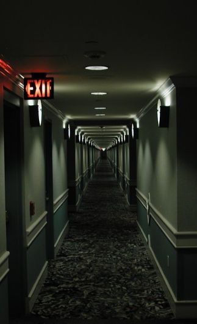

Chapter 1 - In the Hallway

See Character Details
As you step into the hallway you can't help but think about what had just happened...
You'd just drained someone of all their blood... Jesus Christ... what had happened to you? After a few seconds thought you realised that was a stupid question as you remembered the fangs and realised something... you couldn't feel your heartbeat. That shock kept you distracted as you slowly made your way towards the exit.
You couldn't believe what you'd felt in there... the desire to drink someones blood... What was wrong with you? The burning pain of the hunger in your stomach distracted you and kept interfering with your thoughts as you walked down the hallway towards the exit. Especially since you were sure you could hear the heartbeats and smell the blood in the viens of everyone in the rooms you passed.
Deep in thought you reach the entrance to the hotel and leave onto the streets. You need to investigate that clue you had found... it was the only way to get answers.
Out into the streets